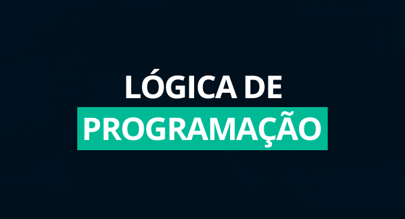
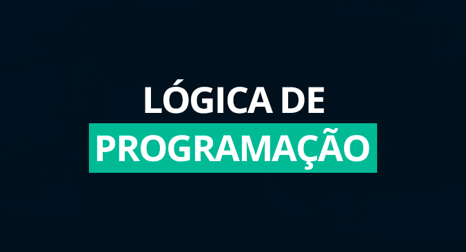

Uma das melhores instituições de cursos atuais.
Encontre os cursos para te capacitar para a área de Informática aqui.
Temos cursos de: Informática Básica, Logica de Programação, Manutenção de Computadores, Excel Completo, Powerpoint Completo, Word Completo.